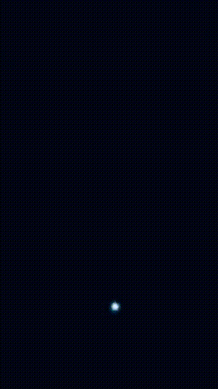

Registro da Estrela Vega
Equipamentos Utilizados
Telescopio: Celestron Inspire 80AZ
Camera: Iphone 11
Ocular de 10mm


Informações da Estrela
A estrela Vega é uma das estrelas mais brilhantes no céu noturno, podendo ser vista ao olho nu no céu. Ela pode ser encontrada na constelação de Libra.
Utiizando o aplicativo Sky Guide podemos achá-la.